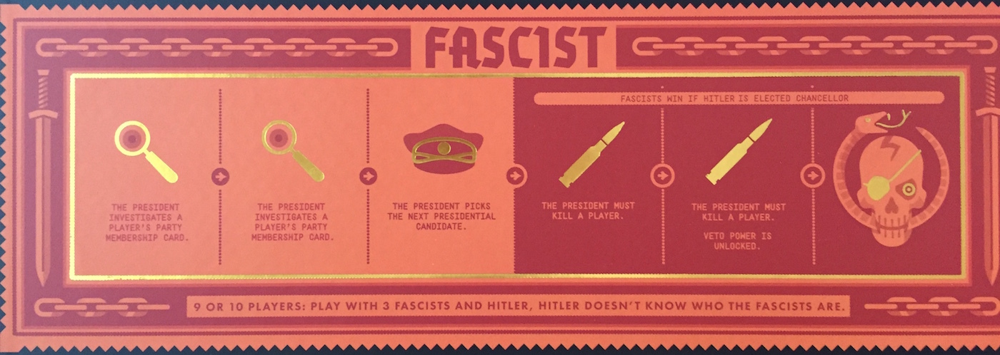
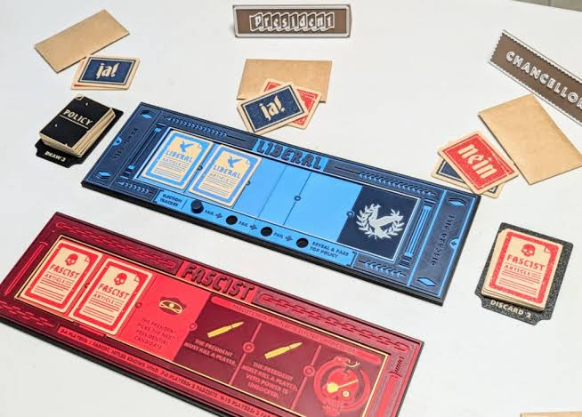

September 4, Blog 2
Secret Hitler Session Report
In our session there were ten players divided into three roles, liberals (Katherine, Sajid, Mario, Mac, Luke, Duy), fascists (Amelia, Ferris, Ysabelle), and hitler (Wendy). The fascists know the roles of every other player while hitler and liberals do not know the roles of other players. The objective of the game for the liberals is to keep fascists out of power and place 6 liberal policies on the board, the goal of the fascists is to place 6 fascist policies on the board or to elect hitler as the chancellor after 3 fascist policies are placed down while keeping their role a secret. The president role is a job that rotates around the table, it allows the player to nominate a candidate for chancellor that is then voted on by the rest of the players. If the vote is successful the president gets to draw 3 policy cards (either fascist or liberal), discard one, then give the two policies to the chancellor who decides which gets implemented. Only the president and chancellor are allowed to see the cards, the only card the other players get to look at is the one that is implemented. After each fascist policy gets implemented the president is given an additional power for that turn.
At the start of the game envelopes are passed out, each contains the role and party affiliation for each player. With ten players there are six liberal roles, three fascist roles, and one hitler role.


Turn One
Ferris (fascist) is the first player who is president, the role will rotate clockwise around the table. Ferris nominates Duy (liberal) as chancellor which passes 8 to 2. Ferris draws her policy cards then passes two policies to Duy. Duy places one fascist card claiming that he was given two fascist cards and had no choice, the president is now allowed to investigate the party affiliation of one player. Ferris chooses to investigate Mac’s (liberal) party affiliation and claims he is a liberal. The rest of the table lobs accusations of him being a communist.
The current policy placements are 0 liberal and 1 fascist.
Turn Two
Amelia (fascist) is now president, she nominates Mac (liberal) as the chancellor. The vote passes 8 to 2. Mac places down a liberal policy card claiming to have been given one of each policy.
The current policy placements are 1 liberal and 1 fascist.
Turn Three
Duy (liberal) is now president, he nominates Katherine (liberal) as chancellor. The vote passes unanimously. Katherine places a liberal policy card claiming to have been given one of each.
The current policy placements are 2 liberal and 1 fascist.
Turn Four
Mac (liberal) is now president, he nominates Wendy (Hitler) as chancellor. The vote passes unanimously. Wendy puts down a liberal policy and claims that she was given one of each.
The current policy placements are 3 liberal and 1 fascist.
Turn Five
Mario (liberal) is now president, he nominates Ferris (fascist) as chancellor. The vote passes 9 to 1. Ferris places a liberal policy claiming that she had been given one of each.
The current policy placements are 4 liberal and 1 fascist.
Currently no one is overly suspicious of anyone’s role, the liberals appear to be in a very advantageous situation with 4 out of 6 policies placed while the fascists have been seemingly kept out of power.
Turn Six
Sajid (liberal) becomes president and nominates Ysabelle (fascist) as chancellor. The vote passes. Ysabelle places a fascist policy claiming to have been given two fascist cards. President Sajid is allowed to investigate someone’s party affiliation and investigates Ysabelle’s, he keeps the information he learns secret from the rest of the table.
The current policy placements are 4 liberal and 2 fascist.
Turn Seven
Ysabelle (fascist) becomes the president and nominates Wendy (Hitler) for chancellor. The vote passes unanimously. Wendy places a fascist policy card and claims that she was given two fascist policies. With three fascist policies implemented the chancellor gets to pick the next president. Wendy chooses Amelia (fascist) as the president for the next turn. The table feels uneasy that the last three policies that were placed were fascist policies, after discussing the current situation the table distrusts Ysabelle and Sajid and suspects one of them is a fascist.
The current policy placements are 4 liberal and 3 fascist. The election of Hitler as chancellor will now end the game as a win for the fascists.
Turn Eight
Amelia (fascist) becomes the president and nominates Ferris (fascist) as chancellor because she is not believed to be a fascist and wants the next power from the fascist policies. The vote passes unanimously. Amelia draws 3 policies, two fascist and one liberal and chooses to discard the liberal one while lying about drawing 3 fascist policies. Ferris places a fascist policy and says she was given two fascist cards. With the fourth fascist policy placed the president is now allowed to kill a player, Amelia kills Sajid (liberal) because he was suspected of being a fascist in an attempt to garner more trust from the rest of the table. Sajid is revealed to not be Hitler.
The current policy placements are 4 liberal and 4 fascist.
Turn Nine
The presidency resumes normal rotation and goes to Wendy (fascist). Wendy nominates Duy (liberal) as chancellor. The table gets into a heated discussion about Duy’s party affiliation. The vote fails.
Turn Ten
Katherine (liberal) becomes president and decides the best course of action for nominating a chancellor is to randomly pick by “playing spin-the-chancellor-tag.” Luckily for the fascists Ferris (fascist) is nominated as the next chancellor. While the table is suspicious of her affiliation the vote passes 9 to 1. Katherine gives Ferris a liberal and a fascist policy card, Ferris places a fascist card claiming that she was given two fascist cards. The next fascist power is implemented and the president is allowed to kill another player. The table hotly debates who should be executed and because Ferris put down a fascist policy the majority of the table believes she is a fascist. Amelia (fascist) decides to use Ferris as a sacrificial lamb in order to become president in the next turn and to again build up credibility by turning on someone she had been supporting throughout the game. Realizing Amelia’s strategy, Ferris stops defending herself and wants to be killed by Katherine because the majority of the table already suspects her of being a fascist. Eventually Katherine decides to kill Ferris who is revealed to not be Hitler.
The current policy placements are 4 liberal and 5 fascist. The fascists will win if one more policy is implemented.
Turn Eleven
Amelia (fascist) is president and nominates Wendy (Hitler) as chancellor. Wendy has primarily kept her head down and masqueraded as a liberal, allowing the other fascist players to move the game into a position where she can be elected under the pretense that she will be a safe choice. The vote passes 9 to 1. Wendy is revealed to be Hitler and the game ends with a fascist victory.
The final policy placements are 4 liberal and 5 fascist. As long as there are 3 or more fascist policies implemented the election of Hitler will end the game as a fascist victory.
Summary
Overall the strategy of the fascist group seemed to be pretending to be liberals in order to gain a level of trust from the rest of the group while intentionally misdirecting fascist accusations. The liberals had a difficult time figuring out who was a fascist and only began to figure it out when the fascists had reached their endgame. The fascists also used the player elimination mechanic to get rid of someone who was suspected of being a fascist but was a liberal in order to build up a level of trust with the liberals at the table. The usage of Ferris as a sacrifice similarly allowed for the liberals to feel a false sense of security while passing the presidency into the hands of another fascist. The table order had proved advantageous for the fascists, allowing a fascist presidency twice in a row before going to Katherine then continuing to two more fascists.